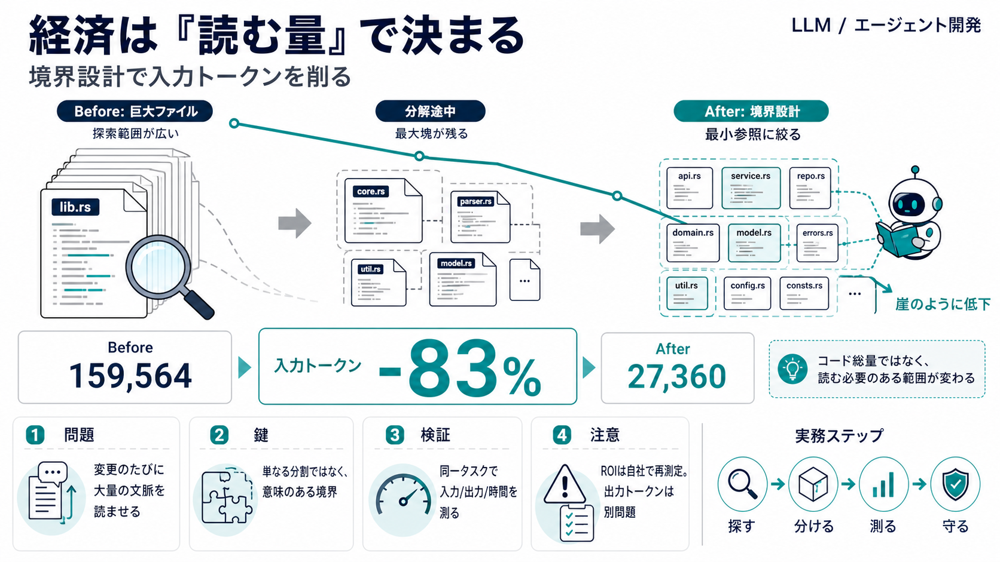

COVER
02 / 14
経済は「読む量」で決まる
リファクタリング
LLM/エージェント開発では、設計改善が「入力トークン（読む情報量）」を下げ、長期の変更コストを圧縮しうる——その効果を実験データで見ます。
焦点（要約）
巨大化した単一ファイルを整理すると、コード総量は大きく変わらないのに入力が激減する。
入力トークン -83%
読みどころ
「分割すれば勝ち」ではなく、エージェントが参照すべき最小範囲へ境界を作れるかが鍵。
PROBLEM
03 / 14
なぜ今、構造が重要？
入力トークン
LLM/エージェントのコストは、主に入力トークン（読ませる量）と出力トークン（生成量）に比例します。
コストの直結点
変更作業のたびに、エージェントは必要情報をプロンプトへ「詰めて」読み取ります。
問題の形
データアクセス層（data access layer）が1つの巨大Rustファイルに肥大化すると、参照範囲が増えやすい。
重要なのは「単にファイルを分けること」ではなく、エージェントが必要な最小集合だけ探索・参照できる境界を作れるかです。
METAPHOR
04 / 14
崖みたいに下がる
ボトルネック
入力は「読むべき候補が多い」ほど増えます。逆に、最大のボトルネックが解消されると、トークンが“崖のように”下がりうる、という見立てです。
状態 i
巨大ファイルが1つに凝縮
探索＝広い
状態 ii
分解が進むが、最大塊は残る
探索＝まだ高い
状態 iii
最大塊が小さくなる
探索＝絞れる
ARCHITECTURE
05 / 14
実験設計のコア
同一変更タスク
各リファクタリング段階の後に、同一の変更プロンプトを新しいサブエージェントへ再実行し、入力/出力トークンを比較しました。
狙い
「人間が前に見たから早くなる」効果を排除し、構造変化そのものの差を見る。
比較軸
入力トークン／出力トークン／実行時間／対象ファイルの行数。
エージェント例：Claude Code、Cursor（著者の実務で併用）。
EVIDENCE
06 / 14
数字が出た
入力トークン -83%
代表的変更で、入力トークンが159,564から27,360へ減少し、約83%の削減が確認されました。
Before
入力トークン：
159,564
After
入力トークン：
27,360
解釈（著者）
コード総量そのものではなく、エージェントが参照すべき最小のファイル集合を見つけられるようになったため、という説明。
DISTINCTION
07 / 14
分割 vs 境界
重要なのは「最小参照」
データ層全体の行数（LoC）が大きくは変わらない一方で、入力トークンだけが減りました。つまり「読む必要のある範囲」が変わっています。
コード総量
大きく変化しない（著者の観察）。
入力トークン
最大巨大ファイルの縮小タイミングで急減（崖現象）。
ランダムな分割は逆効果になり得ます。探索が増えて、結局読む量が増えるからです。
PROCESS
08 / 14
段階は積み上げ
同一層の継続効果
削減は単発ではなく、同じデータアクセス層に触れる以後の変更ほど継続的に安くなる可能性が示唆されています。
i. 初期
肥大化した単一塊が探索の支配要因。
ii. 改善
分解が進み、参照候補が絞れ始める。
iii. 習慣化
以後の変更でも「読ませる量」が落ち続ける。
「次の変更も安い」は、構造が良い状態へ寄っていくことの副作用として期待される、という位置づけ。
COMPARISON
09 / 14
入力が下がるが…
出力は別問題
著者の観察では、出力トークンは大きくは変わらなかった可能性があります。総コスト最適化には、入力だけでなく出力も含めた検証が必要です。
入力側
読む量
が削減（コストに直結しやすい）。
出力側
生成量・形式
は、リファクタリングで必ずしも減らない。
「入力が安くなれば総コストも下がる可能性」は高いが、ROIを確定するには入出力の両側を見たい。
EVIDENCE
10 / 14
限界も明記
厳密ROIは未完
計測には不確実性があります。リアルタイムのClaudeトークン計測が信頼しにくく、文字数÷4のtiktoken近似や推定に依存している点が弱点です。
計測の不確実性
文字数とtiktoken近似で推定。誤差があり得る。
コストの未積算
リファクタリング実行の全コスト（設計や試行含む）を正確に積算できていない。
プロセス上の制約
エージェントは自律的に良いリファクタリング手順を選ぶのが苦手で、人間の誘導が必要だった。
ENUMERATION
11 / 14
実務の教訓（使いどころ）
何を優先する？
主張を意思決定に落とすときの優先順位は、入力トークン削減が期待できる“構造の境界”へ寄せることです。
i. 探す
変更時に読まされる最大の巨大ファイル（最大ボトルネック）を特定。
ii. 分ける
単なる分割でなく、関連箇所を絞って参照できる境界設計へ。
iii. 測る
入力/出力トークン、実行時間、必要変更の種類ごとに小さく再検証。
iv. 守る
自動リファクタリングの品質リスクに対し、テストとレビューの統制を厚く。
DISTINCTION
12 / 14
FAQで誤解を潰す
分割は手段
誤解しやすい点は「なぜ入力が減るのか」「分割だけで足りるのか」です。答えは“最小参照を作れるか”にあります。
Q1. なぜ経済的？
入力トークン（読む情報量）が課金に直結しやすく、変更のたびの“読み”が安くなるから。
Q2. LoCは？
コード総量は大きく変わらないのに入力が下がる。理由は参照範囲が絞れたため。
Q3. 単に分割？
ランダム分割は探索が増え得て逆効果。重要なのは境界設計。
Q4. 出力は？
出力トークンは別要因（生成量/形式）で減らないことがある。総コスト最適化には別途検証が必要。
CLOSING
13 / 14
結論：入力を削る設計へ
次の一手
このケースでは、リファクタリングが“読む量”を約83%削減し得ることが示されました。次は自社で、入力トークン削減ターゲット（最大ボトルネック）を特定し小さく検証するのが安全です。
確からしい点
分割そのものより、エージェントが参照すべき最小範囲へ境界を作ることが効く可能性。
入力削減＝変更コスト圧縮（候補）
注意点
トークン推定や総コスト未積算、手順誘導依存などで、ROIの確定には追加実験が必要。
ROIは自社で再測定
参考：本デッキは提示された要約（Pre-knowledge/Summary/Points/FAQ/My opinion）をもとに再構成しています。
REFERENCES
14 / 14
References
No references found